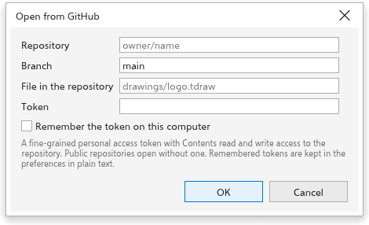

لم تُترجم هذه الصفحة بعد وتُعرض بالإنجليزية.
Keeping drawings on GitHub
TraceDraw can open drawings from a GitHub repository and save them back as commits, on the desktop and in the browser. Each save becomes a version in the repository's history, which you can open again later. The commands are in File > GitHub.
Before you start: the token
Public repositories open without a token. To open private ones and to save, create a fine-grained personal access token on GitHub with read and write access to the contents of the repository, and paste it in the Token field.
The token is kept while TraceDraw runs. Tick Remember the token on this computer to keep it for the next time; it is then stored in plain text in your preferences (in the browser, in that browser's storage). The dialog boxes also remember the last repository, branch and path.
Opening a drawing from GitHub
- Choose File > GitHub > Open from GitHub.
- Type the Repository as
owner/nameor its github.com address. - Type the Branch, or leave it empty for
main. - Type the path of the File in the repository, for example
art/logo.tdraw. - Click OK.
The drawing opens in a new tab, named after the file. It remembers where it came from and which version it was.

Saving a drawing to GitHub
For a drawing opened from GitHub, Save (Ctrl+S) saves it back. For any drawing, choose File > GitHub > Save to GitHub.
- Check the repository, branch and path.
- Write a Commit message that says what changed (it starts as "Update" and the file name).
- Click OK.
The drawing is saved as a .tdraw file, with its fonts, as a new commit on that branch. Save As still saves a file on your computer.

When GitHub refuses a save
If the file changed on GitHub since you opened it, or a file already exists at that path and your drawing did not come from it, GitHub refuses the save and the dialog box says so. Save under another path or branch, or open the newer version first. The dialog box also explains other problems: a token that is refused or has no access, too many requests, a repository, branch or file that does not exist, a path that is a folder, a file that is not a drawing, or a drawing larger than 100 MB.
Opening an earlier version
For a drawing opened from GitHub, choose File > GitHub > History. The box lists the commits that changed the file, newest first, with their short id, date, author and message. Select one and click Open: that version opens as a new drawing, named after the file and the commit, which is not tied to GitHub.